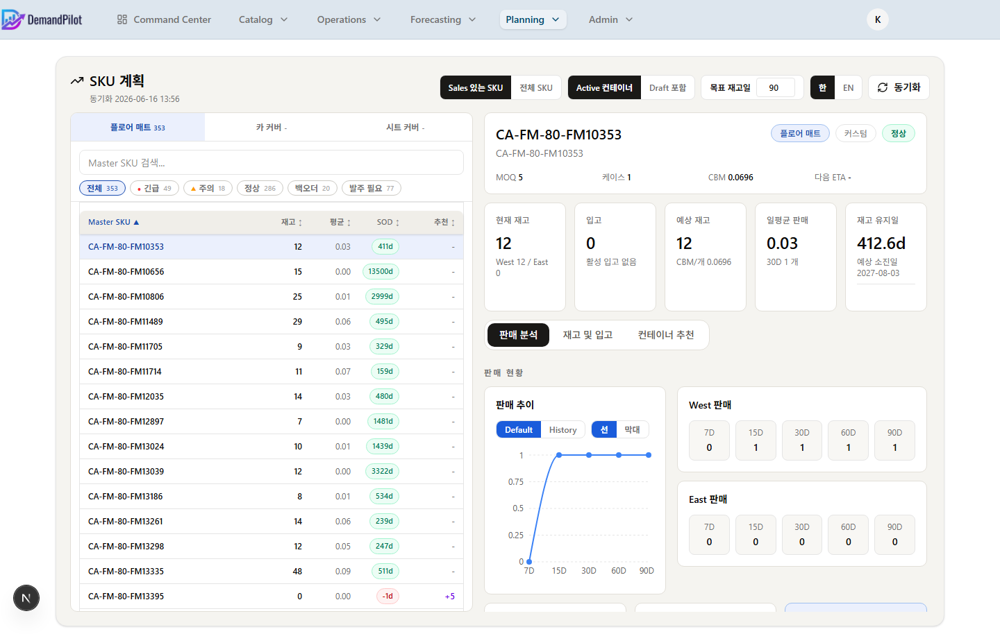
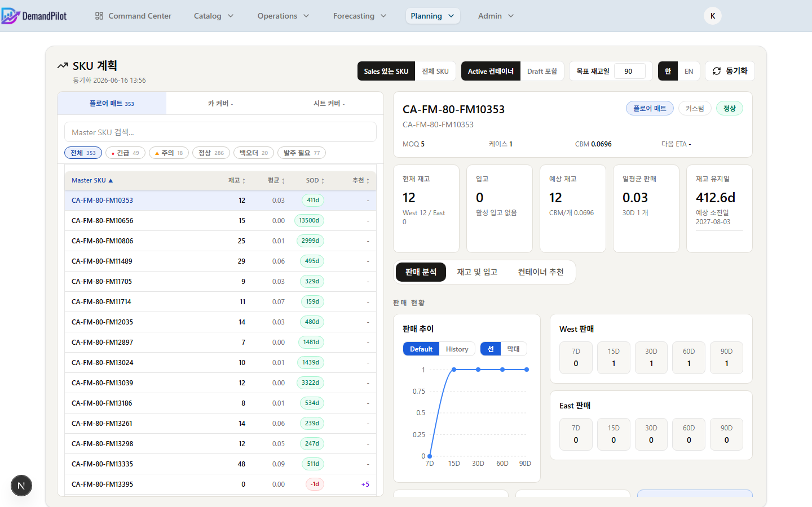
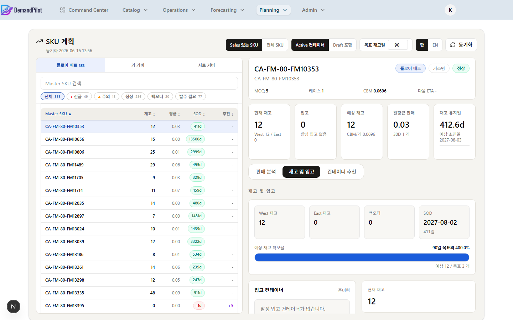
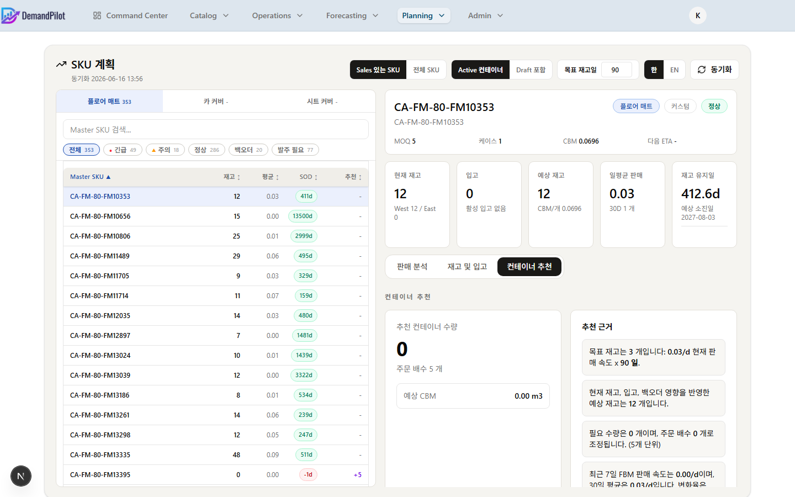
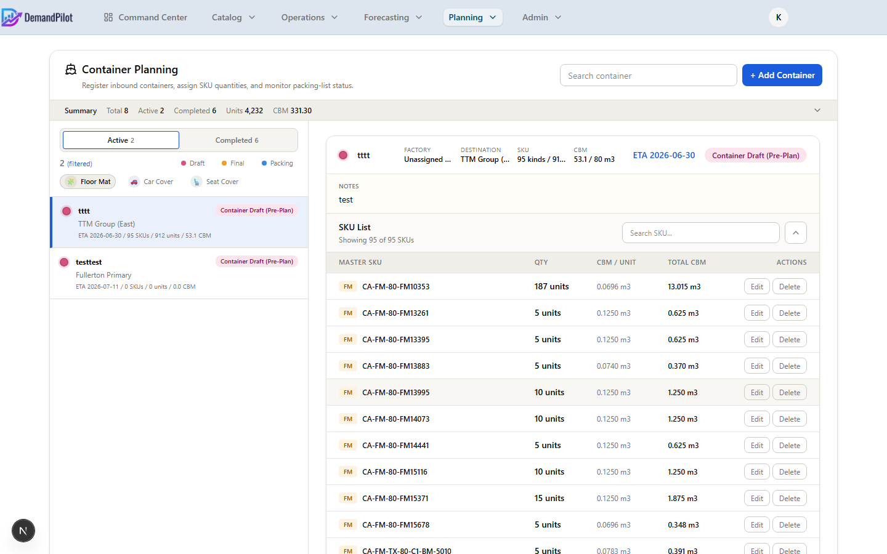
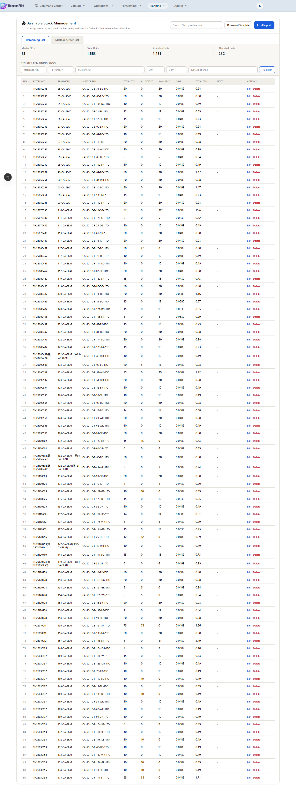

각 컨테이너 헤더에는 두 가지 자동계산 버튼이 있습니다.

🔍
SKU Planning 전체 화면
'" alt="SKU Planning">
▲ SKU Planning – 좌측 SKU 브라우저 + 우측 3탭 상세 분석
화면 전체 구성
📋 좌측 패널 – SKU 브라우저 (580px)
- SC / CC / FM 제품 탭 전환 (건수 뱃지 표시)
- 검색창: SKU명·컨테이너 번호·판매 상태 실시간 필터
- 긴급도별 필터 뱃지 (All / Critical / Watch / High / Low / Order Required)
- SKU 목록: 재고·일판매량·SOD·권장수량 열람 및 정렬
📊 우측 패널 – SKU 상세 분석
- SKU 헤더: 이름·제품명·상태·MOQ·CBM·다음 ETA
- KPI Strip: 5개 핵심 지표 카드
- 판매 분석 탭: 기간별 판매 추이 차트
- 재고 및 입고 탭: 재고 커버리지·입고 컨테이너 목록
- 컨테이너 추천 탭: 권장 발주 수량 + What-If 시뮬레이션
상단 전역 컨트롤
| 컨트롤 (화면 레이블) | 설명 |
|---|
| 제품 탭 (SC / CC / FM) | Seat Cover · Car Cover · Floor Mat 중 하나를 선택합니다. 탭 우측에 해당 제품의 총 SKU 수가 표시됩니다. |
| Sales 있는 SKU / 전체 SKU | 토글. Sales 있는 SKU: 최근 판매 실적이 있는 SKU만 표시. 전체 SKU: 판매 이력 없는 SKU까지 모두 표시. |
| Active 컨테이너 / Draft 포함 | 토글. Active 컨테이너: 확정된 컨테이너 기준 재고 계산. Draft 포함: 초안(Draft) 컨테이너 입고량까지 포함하여 계산. |
| 목표 재고일 (1–365) | 컨테이너 추천 탭의 목표 재고 일수를 설정합니다. 이 값이 커질수록 권장 발주 수량이 늘어납니다. KPI의 재고 유지일 기준이 됩니다. |
| 언어 전환 (KO / EN) | 화면 레이블을 한국어·영어로 전환합니다. localStorage에 저장됩니다. |
| 🔄 동기화 | 서버에서 최신 수요 계획 데이터를 다시 불러옵니다. |
① 좌측 SKU 브라우저 패널
검색 및 필터 뱃지
검색창에 SKU 이름, 컨테이너 번호, 또는 판매 상태 일부를 입력하면 목록이 실시간으로 좁혀집니다. 검색창 아래에는 긴급도별 필터 뱃지가 있어 클릭 한 번으로 특정 상태의 SKU만 볼 수 있습니다.
| 필터 뱃지 | 조건 |
|---|
| All | 전체 SKU (필터 없음) |
| Critical | 긴급도 = Critical인 SKU (재고 소진 임박) |
| Watch | 긴급도 = Watch인 SKU (재고 주의 필요) |
| High | 긴급도 = Healthy인 SKU (재고 양호) |
| Low | Back Order(재고 부족) 수치가 음수인 SKU |
| Order Required | 권장 발주 수량(Rec. Qty) > 0인 SKU |
SKU 목록 컬럼 (한국어 모드 기준)
| 컬럼 헤더 | 내용 |
|---|
| Master SKU | SKU 고유 식별자. 클릭 시 우측 패널에 상세 정보가 표시됩니다. 컬럼 헤더 클릭으로 알파벳 정렬 가능. |
| 재고 | 현재 총 재고 수량 (West + East). 클릭 시 오름차순/내림차순 정렬. |
| 평균 | 현재 일평균 판매량, 소수점 2자리. 클릭 시 정렬. |
| SOD | 재고 소진 예정일까지 남은 일수 뱃지. D-5처럼 표시. 클릭 시 정렬. |
| 추천 | 권장 발주 수량. 0 초과 시 보라색으로 강조. 클릭 시 정렬. |
💡
가상 스크롤링: SKU 목록은 36px 행 높이의 가상 스크롤로 구현되어 수천 개의 SKU도 빠르게 렌더링됩니다. 목록이 느리게 로드될 경우 상단 제품 탭이나 검색으로 범위를 좁혀보세요.
② KPI 요약 카드 (5개)
SKU를 선택하면 탭 위에 5가지 핵심 지표가 카드 형태로 표시됩니다.
📦 현재 재고
현재 창고 총 재고. 하단에 West / East 창고별 분리 수량이 표시됩니다.
🚢 입고
입고 예정 총 수량. 부제목으로 Draft 포함 여부와 가장 가까운 다음 ETA 날짜가 표시됩니다. 입고 예정이 없으면 "활성 입고 없음" 표시.
📈 예상 재고
현재 재고 + 입고 예정 + 백오더 영향을 합산한 예상 보유 재고. 부제목에 SKU의 CBM/개 값이 표시됩니다.
📊 일평균 판매
현재 일평균 판매 속도. 부제목에 최근 30일 총 판매량(단위: 개)이 표시됩니다.
⏱️ 재고 유지일
예상 재고 유지 일수와 예상 소진일(SOD). 입고가 있을 경우 "현재 재고만" 일수(입고 제외 시 몇 일인지)도 긴급도 색상으로 표시합니다.
⚠️
Draft 포함 토글 영향: 상단에서 Draft 포함을 켜면 입고·예상 재고·재고 유지일 수치가 모두 Draft 컨테이너 입고량을 포함한 값으로 바뀝니다. 확정된 입고만 보려면 Active 컨테이너로 토글을 두세요.
③ 판매 분석 탭

📈
판매 분석 탭 – 기간별 판매 추이 차트
'" alt="판매 분석 탭">
▲ 판매 분석 탭 – 기간별 판매 추이 차트 (Default View)
선택한 SKU의 기간별 판매 데이터를 차트와 수치 표로 확인합니다. Default View와 History View 두 가지 모드가 있습니다.
기본 보기 – 기간별 요약
| 항목 (화면 레이블) | 설명 |
|---|
| 판매 추이 차트 | 7D·15D·30D·60D·90D 기간별 판매량을 막대 또는 꺾은선 차트로 시각화. 차트 우측 상단 아이콘으로 선 / 막대 전환 가능. |
| West 판매 표 | 서부 창고 기준 7D / 15D / 30D / 60D / 90D 판매량 5행 표. |
| East 판매 표 | 동부 창고 기준 동일 구조 5행 표. West 판매와 나란히 배치되어 지역별 비교 용이. |
| 평균 카드 3개 | 이전 평균(이전 기간 일평균) · 실제 평균(실제 평균) · 현재 평균(현재 일평균, 파란색 강조) |
히스토리 보기 – 사용자 정의 기간
히스토리 보기 토글을 켜면 날짜 범위 입력 필드가 나타납니다.
| 항목 | 설명 |
|---|
| 날짜 범위 입력 | 시작일 ~ 종료일을 직접 입력합니다. 2024-Today 버튼으로 2024년부터 오늘까지 범위를 한 번에 설정할 수 있습니다. |
| 집계 단위 (일 / 주 / 월) | 일 / 주 / 월 중 선택. 선택에 따라 차트 X축 구간이 변경됩니다. |
| 범위 요약 | 선택 기간의 총 판매량과 일평균이 우측에 표시됩니다. |
④ 재고 및 입고 탭

🏭
재고 및 입고 탭 – 재고 커버리지 + 입고 컨테이너 목록
'" alt="재고 및 입고 탭">
▲ 재고 및 입고 탭 – 재고 커버리지 진행바 + 입고 컨테이너 카드
현재 재고가 목표 일수 대비 얼마나 확보되어 있는지, 어떤 컨테이너가 언제 입고 예정인지 한눈에 확인합니다.
재고 요약 카드 (4개)
🏬 West 재고 / East 재고
서부·동부 창고별 현재 재고 수량. Draft 포함 시 상단에 Draft 뱃지와 Draft 합산 수량이 주황색으로 표시됩니다.
⚠️ 백오더 / SOD
백오더: 현재 재고 부족 수량 (음수면 빨간색 표시). SOD: 재고 소진 예정일과 D-Day 카운트다운.
예상 재고 확보율 진행바
상단 헤더 레이블: "예상 재고 확보율"
| 항목 | 설명 |
|---|
| 확보율 퍼센트 | 목표 재고일 대비 현재 예상 재고의 비율. 예: 90일 목표의 78%. 100% 미만이면 주황, 100% 이상이면 초록 진행바. |
| 예상 / 목표 수치 | 진행바 아래에 예상 {X} / 목표 {Y} 개 형태로 구체적인 수량 비교가 표시됩니다. |
| 목표일 기준 | 상단 전역 컨트롤의 목표 재고일 값이 여기에 그대로 반영됩니다. |
입고 컨테이너 목록
해당 SKU가 포함된 모든 입고 예정 컨테이너를 카드 형태로 나열합니다.
| 항목 (화면 레이블) | 설명 |
|---|
| 컨테이너 이름 | 컨테이너 번호. Draft 상태이면 Draft 뱃지가 함께 표시되며 카드 테두리가 주황색으로 강조됩니다. |
| 상태 | 컨테이너의 현재 상태 (Draft / Final List Sent / Packing List Rcvd / Complete). |
| ETA | 도착 예정일. 가까운 순서로 정렬됩니다. |
| 수량 | 이 SKU에 배정된 입고 수량. |
| CBM | 이 SKU가 차지하는 CBM 부피. |
| 카드 클릭 | 해당 컨테이너의 Container Planning 상세 페이지로 바로 이동합니다. |
💡
Draft 컨테이너 확인: 상단 토글을 Draft 포함으로 설정하면 아직 확정되지 않은 Draft 컨테이너도 목록에 나타납니다. Draft 포함 여부는 예상 재고 확보율 진행바 수치에도 영향을 줍니다.
우측 요약 카드 (4개)
입고 / 입고 (Draft 포함)
입고 예정 총 수량. Draft 포함 설정이면 "(Draft 포함)" 표기.
예상 재고
현재 재고 + 입고 + 백오더 합산 예상 재고.
잔여 / 오류
Available Stock에 등록된 여유 재고(잔여)와 미스테이크 오더(오류) 수량.
⑤ 컨테이너 추천 탭

🛒
컨테이너 추천 탭 – 권장 발주 수량 + What-If 시뮬레이션
'" alt="컨테이너 추천 탭">
▲ 컨테이너 추천 탭 – 권장 발주량 · 시뮬레이션 · 상세 계산 내역
목표 재고 일수를 기준으로 권장 발주 수량을 산출하고, 임의의 수량과 ETA를 입력해 시나리오를 비교합니다.
추천 컨테이너 수량
| 항목 (화면 레이블) | 설명 |
|---|
| 추천 컨테이너 수량 (대형 숫자) | MOQ·발주 배수(주문 배수)를 자동 적용한 권장 컨테이너 입고 수량. 보라색 대형 텍스트로 표시. |
| 주문 배수 | 적용된 발주 배수. 예: 5 단위 → 5, 10, 15 … |
| 예상 CBM | 권장 수량을 적재할 경우 필요한 CBM 부피 (단위: m³). |
권장 수량 산출 근거 (4줄 설명)
권장 박스 우측에 4가지 계산 근거가 불릿 형태로 표시됩니다.
① 목표 재고
일판매 × 목표 일수 = 확보해야 할 목표 재고량
② 예상 재고
현재 재고 + 입고 예정 + 백오더 영향
③ 실제 필요량
목표 재고 − 예상 재고, 발주 배수 단위로 올림(ROUNDUP)
④ 속도 컨텍스트
7D 평균 vs 30D 평균 비교 및 변화율(%). 최근 판매가 가속/감속 중인지 표시.
What-if 시뮬레이션
권장 수량이 아닌 다른 수량·ETA로 발주했을 때 어떤 결과가 나오는지 미리 계산해 봅니다.
| 입력 항목 (화면 레이블) | 설명 |
|---|
| 제안 컨테이너 수량 | 실제 발주하려는 수량을 입력합니다. 주문 배수 단위로 증감 가능. 초기값은 권장 수량. |
| 가정 ETA | 예상 도착일을 날짜 picker로 설정합니다. 초기값은 오늘부터 90일 후. |
| 추천값 초기화 | 입력값을 시스템 권장 수량·기본 ETA로 초기화합니다. |
시뮬레이션 결과 (5개 수치)
ETA 전 수요
ETA 이전까지 판매될 예상 수량 (일판매 × 남은 일수).
ETA 전 백오더
ETA 도착 전에 재고가 먼저 소진될 경우 발생하는 백오더 수량. 0 초과면 위험 색상으로 강조.
ETA 후 백오더
ETA 도착 후 상태 기준 백오더 잔량. 0 초과면 여전히 재고 부족을 의미.
필요 CBM
입력한 발주 수량을 적재하는 데 필요한 CBM.
예상 SOD
시뮬레이션 조건 기준의 재고 소진 예정일.
비교 라인: 시뮬레이션 결과 아래에 현재 SOD | 시뮬레이션 SOD | ETA 후 잔여 3가지 수치가 한 줄로 비교 표시되어 현재 상황 대비 개선폭을 즉시 파악할 수 있습니다.
계산 내역 (4열 그리드)
시뮬레이션 결과 아래에 8가지 계산 구성 요소가 상세히 표시됩니다.
| 항목 (화면 레이블) | 설명 |
|---|
| 목표 일수 | 상단 컨트롤에서 설정한 목표 재고 일수 |
| 일평균 판매 | 현재 일평균 판매 속도 |
| 목표 재고 | = 일평균 판매 × 목표 일수 |
| 현재 재고 | 현재 창고 총 재고 |
| 입고 / 입고 (Draft 포함) | 입고 예정 총 수량 (Draft 포함 여부 표기) |
| 백오더 영향 | 현재 백오더 수량 (음수이면 재고 감소 요인) |
| 예상 재고 | = 현재 재고 + 입고 + 백오더 영향 |
| 필요 수량 | = 목표 재고 − 예상 재고 (주문 배수 올림 전 원시 필요량) |
✅
MOQ & 주문 배수 자동 적용: 필요 수량이 MOQ보다 작으면 자동으로 MOQ를 적용합니다. 최종 권장 수량은 항상 주문 배수의 배수로 올림(ROUNDUP) 처리됩니다. SKU Master에 MOQ·주문 배수가 올바르게 설정되어 있어야 합니다.

▲ Container Planning – 좌측 컨테이너 목록 + 우측 상세
컨테이너 상태 흐름
Draft
→
Final List Sent
→
Packing List Rcvd
→
Complete
① 컨테이너 등록하기
1
+ Add Container 클릭
화면 우측 상단의 + Add Container 버튼을 클릭합니다.
2
기본 정보 입력
컨테이너 번호(예: 182-CA-SEAT), ETA(도착 예정일), 목적지 창고, CBM 용량(기본 80)을 입력합니다.
3
SKU 추가
Master SKU를 입력하고 수량을 등록합니다. 엑셀 파일로 일괄 업로드도 가능합니다 (Import Excel).
4
Available Stock 배정 (선택)
창고에 대기 중인 여유 재고를 이 컨테이너에 배정하려면 Available Stock 버튼을 사용합니다.
5
상태 변경
공장에 발주서를 보냈으면 Final List Sent으로 변경합니다. 패킹 리스트를 받으면 Packing List Rcvd로 변경하세요.

📋
컨테이너 상세 화면 (SKU 목록)
'" alt="컨테이너 상세">
▲ 컨테이너 상세 – SKU별 수량·CBM 목록
② 상태별 주의사항
| 상태 | 편집 가능 항목 | Demand Planning 표시 여부 | 비고 |
|---|
| Draft |
모든 항목 편집 가능 |
✅ (Draft 포함 토글 ON 시) |
초안 단계. 자유롭게 수정하세요. |
| Final List Sent |
수량만 편집 가능 |
✅ 항상 표시 |
공장 발송 후. SKU 추가/삭제 불가. |
| Packing List Rcvd |
읽기 전용 |
✅ 항상 표시 |
패킹 리스트 수신 후. 변경 불가. |
| Complete |
읽기 전용 |
❌ 표시 안 됨 |
입고 완료. Demand Planning에서 완전 제외. 삭제는 Planner/Admin만 가능. |
③ Complete 상태와 Demand Planning 표시 규칙
⚠️
Complete 상태 컨테이너는 Demand Planning에 표시되지 않습니다.
컨테이너를 Complete로 변경하는 순간, 해당 컨테이너는 Demand Planning의 컨테이너 열 목록에서 즉시 사라지고, SKU별 발주 계획(Con. Qty) 계산에서도 제외됩니다.
시스템이 이렇게 동작하는 이유는 입고가 완료된 재고는 이미 창고 실재고(Current Stock)에 반영되었기 때문입니다. 이후 발주 계획은 갱신된 실재고 수치를 기준으로 다시 계산하면 됩니다.
🚫 Demand Planning에서 제외되는 조건
- 상태 = Complete
- 컨테이너 열이 사라지고 Con. Qty 계산에서 제외
- 자동계산 버튼(⟳ / ⟳₂ / ⟳₃) 결과에도 미반영
- SKU Planning > 재고 및 입고 탭의 입고 컨테이너 목록에도 미표시
✅ Demand Planning에 표시되는 조건
- 상태 = Final List Sent
- 상태 = Packing List Rcvd
- 상태 = Draft (Draft 포함 토글 ON 시에만)
상태 전환 시 Demand Planning 변화 흐름
Draft
→
Final List Sent
→
Packing List Rcvd
→
Complete ❌
Complete로 변경되는 순간 Demand Planning 컨테이너 목록에서 제거됩니다.
| 상황 | 권장 조치 |
|---|
| 실제 입고가 완료된 컨테이너 |
Complete로 변경 → 창고 재고에 반영되었으므로 Demand Planning에서 자동 제외. 이후 재고 현황은 Demand Planning의 현재 재고(Stock) 수치로 확인. |
| 아직 창고 입고 전인데 Complete로 잘못 변경한 경우 |
Container Planning에서 해당 컨테이너를 찾아 상태를 Packing List Rcvd로 되돌리면 Demand Planning에 즉시 다시 표시됩니다. |
| Complete 컨테이너 내역을 다시 보고 싶은 경우 |
Container Planning 페이지에서 직접 조회합니다. Demand Planning과 SKU Planning에서는 Complete 컨테이너가 표시되지 않습니다. |
✅
올바른 Complete 처리 순서:
- 실물 입고 확인 후 Container Planning에서 해당 컨테이너 클릭
- 상태를 Complete로 변경
- 외부 재고 DB 동기화 후 Demand Planning에서 🔄 Sync 클릭
- 현재 재고(Stock) 수치가 갱신된 것을 확인하고 발주 계획을 재검토
💡
패킹 리스트 내보내기: 컨테이너 상세 화면에서 Export Excel을 클릭하면 패킹 리스트를 엑셀 파일로 다운로드할 수 있습니다.
⚠️
CBM 초과 주의: 화면 상단에 현재 CBM 사용률이 표시됩니다. 80 CBM을 초과하지 않도록 주의하세요.

📦
Available Stock 화면
'" alt="Available Stock">
▲ Available Stock – Remaining List / Mistake Order 탭
탭 구성
📋 Remaining List
생산 완료 후 창고에 대기 중인 정상 재고입니다. TH(태국) 번호를 기준으로 관리합니다.
🔄 Mistake Order List
발주 오류·취소 등으로 발생한 여유 재고입니다. Remaining과 동일한 방식으로 관리합니다.
재고 등록하기
1
Reference No. 입력
TH 번호(예: TH-2024-001)를 입력합니다.
2
Master SKU 입력
SKU를 입력하면 SKU Master에서 CBM을 자동으로 가져옵니다.
3
수량 입력 후 Register
총 수량을 입력하고 Register를 클릭합니다.
수량 상태 이해하기
| 컬럼 | 의미 |
|---|
| Total Qty | 등록된 전체 수량 |
| Allocated Qty | 컨테이너에 이미 배정된 수량 (주황색으로 표시) |
| Available Qty | 아직 배정되지 않은 사용 가능 수량 (Total − Allocated) |
✅
일괄 등록: 📥 Import Excel 버튼을 사용하면 엑셀로 한 번에 여러 항목을 등록할 수 있습니다. 📄 Template으로 양식을 먼저 다운로드하세요.

▲ SKU Master – 전체 SKU 목록 및 편집 화면
주요 컬럼 설명
| 항목 | 설명 | 예시 |
|---|
| Master SKU | 고유 SKU 식별자 | CA-SC-10-F-10-BK-1TO |
| CBM / Unit | 박스 1개당 부피(㎥). 발주 계산의 핵심 값. | 0.042500 |
| MOQ | 최소 발주 수량. 이 수량 미만으로 발주 불가. | 10 |
| Order Multiple | 발주 수량의 배수 단위 (예: 5 → 5, 10, 15, 20…) | 5 |
| Case Qty | 박스 1개에 들어가는 제품 수량 | 1 |
| Status | Active / Inactive – 비활성화 시 발주 계산에서 제외 | |
SKU 정보 수정하기
1
검색으로 SKU 찾기
상단 검색창에 SKU 이름 일부를 입력하거나 제품 타입 드롭다운으로 범위를 좁힙니다.
2
Edit 버튼 클릭
수정할 SKU 행의 Edit 버튼을 클릭하면 CBM·MOQ·배수·케이스 수량 필드가 편집 가능해집니다.
3
값 수정 후 Done 클릭
수정 완료 후 Done을 클릭하면 자동으로 저장됩니다.
💡
일괄 CBM 업데이트: Import Excel로 여러 SKU의 CBM을 한번에 업데이트할 수 있습니다.
🔄
재고 동기화: Sync Inventory를 누르면 외부 재고 DB에서 최신 데이터를 가져옵니다.
| 용어 | 설명 |
|---|
| CBM | Cubic Meter. 박스 1개의 부피(㎥). 컨테이너 적재량 계산의 기준. |
| MOQ | Minimum Order Quantity. 한 번에 발주 가능한 최소 수량. |
| ETA | Estimated Time of Arrival. 컨테이너 도착 예정일. |
| SOD | Sell-Out Date. 현재 재고가 모두 소진되는 예상 날짜. |
| INV Life | Inventory Life. 현재 재고가 몇 일간 유지되는지 나타내는 지표 (재고 ÷ 일평균 판매). |
| Back Order | 재고 부족으로 발생한 미처리 수요. 음수 재고 상태. |
| Carryover | 컨테이너 도착 이후 남는 잔여 재고. |
| Transit Stock | 현재 해상 운송 중인 재고 (아직 창고에 미입고). |
| Con. Qty | Container Quantity. 해당 컨테이너에 담을 발주 수량. |
| Gradient Tier | 일판매량 구간별 재고 목표 일수 보너스 테이블. TOP·A·B·C·D 5단계. |
| Remaining List | 생산 완료 후 창고에서 입고 대기 중인 정상 재고 목록. |
| Mistake Order | 발주 오류·취소 등으로 발생한 잉여 재고 목록. |
Demand Pilot 사용자 매뉴얼 v1.0 · 2026.06 · shipcore.com